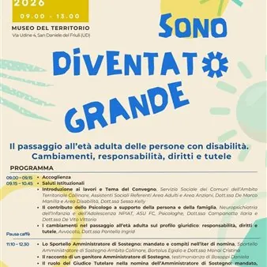

sab 21 nov · dalle 09:00
Sono diventato grande
𝐒𝐚𝐛𝐚𝐭𝐨 𝟐𝟏 𝐧𝐨𝐯𝐞𝐦𝐛𝐫𝐞 𝟐𝟎𝟐𝟔, dalle 𝟎𝟗.𝟎𝟎 alle 𝟏𝟑.𝟎𝟎, al 𝐌𝐮𝐬𝐞𝐨 𝐝𝐞𝐥 𝐓𝐞𝐫𝐫𝐢𝐭𝐨𝐫𝐢𝐨 (Via Udine, 4), un convegno dedicato al passaggio all’età adulta delle persone con disabilità
 Indicazioni
Indicazioni
- Costi e prenotazioni
- Costo non indicato · Prenotazione non indicata
- Programma
- Programma da verificare. Apri la fonte ufficiale per orari e possibili aggiornamenti.
- In caso di maltempo
- Nessuna indicazione specifica pubblicata.
- Note
- Acquisito automaticamente dalla fonte.
L’EVENTO
Descrizione completa
𝐒𝐎𝐍𝐎 𝐃𝐈𝐕𝐄𝐍𝐓𝐀𝐓𝐎 𝐆𝐑𝐀𝐍𝐃𝐄
𝐒𝐚𝐛𝐚𝐭𝐨 𝟐𝟏 𝐧𝐨𝐯𝐞𝐦𝐛𝐫𝐞 𝟐𝟎𝟐𝟔, dalle 𝟎𝟗.𝟎𝟎 alle 𝟏𝟑.𝟎𝟎, al 𝐌𝐮𝐬𝐞𝐨 𝐝𝐞𝐥 𝐓𝐞𝐫𝐫𝐢𝐭𝐨𝐫𝐢𝐨 (Via Udine, 4), un convegno dedicato al passaggio all’età adulta delle persone con disabilità
Al termine del convegno, seguirà un 𝐫𝐢𝐧𝐟𝐫𝐞𝐬𝐜𝐨 presso la 𝐂𝐚𝐬𝐚 𝐝𝐞𝐥 𝐏𝐫𝐨𝐬𝐜𝐢𝐮𝐭𝐭𝐨 (Via T. Ciconi, 24)
𝐏𝐫𝐞𝐧𝐨𝐭𝐚𝐳𝐢𝐨𝐧𝐞 𝐜𝐨𝐧𝐬𝐢𝐠𝐥𝐢𝐚𝐭𝐚: 0432 949511 - 0432 949550 - ats.collinare@asufc.sanita.fvg.it
Un’occasione di confronto e approfondimento su cambiamenti, responsabilità, diritti e tutele, con il contributo di professionisti, esperti e testimonianze. PROGRAMMA
Il passaggio all’età adulta delle persone con disabilità: cambiamenti, responsabilità, diritti e tutele. 09:00 – 09:15 | Accoglienza 09:15 – 10:45 | Saluti istituzionali e introduzione ai lavori. Introduzione ai lavori e tema del convegno – Servizio Sociale dei Comuni dell’Ambito Territoriale Collinare. Il contributo dello psicologo a supporto della persona e della famiglia. I cambiamenti nel passaggio all’età adulta sul profilo giuridico: responsabilità, diritti e tutele. - Pausa caffè - 11:10 – 12:30 | Approfondimenti: Lo Sportello Amministratore di Sostegno: mandato e compiti nell’iter di nomina. Il racconto di un genitore Amministratore di Sostegno. Il ruolo del Giudice Tutelare nella nomina dell’Amministratore di Sostegno: mandato, compiti e funzioni. 12:30 – 13:00 | Domande dal pubblico 13:00 | Chiusura dei lavori ☕ Al termine del convegno seguirà un rinfresco presso la Casa del Prosciutto, in via T. Cicconi n. 24, a circa 150 metri dal Museo del Territorio.
IL PROGRAMMA
Programma e orari
Appuntamenti raccolti dalle fonti elencate. Dove manca un orario, non è ancora disponibile in questa scheda.
Programma pubblicato
- 09:00 – 09:15 | Accoglienza
- 09:15 – 10:45 | Saluti istituzionali e introduzione ai lavori.
- 12:30 – 13:00 | Domande dal pubblico
- 13:00 | Chiusura dei lavori
INFORMAZIONI UTILI
Prima di partire
- Controllare la fonte prima di partire.
ORGANIZZAZIONE